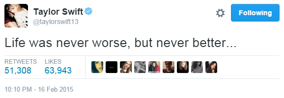

5. New Romantics
2月15号，TS录Shake it Off。
2月19号，TS录Style。
3月1号，KK翘掉巴黎时装周飞到LA，和TS一起参加Weinstein Company's pre-Oscars party，TS乱入了KK和Gigi的合影。
{kind=link}
{kind=link}
{kind=link}
3月2号，TS和KK一起参加Vanity Fair Oscar Party。
{kind=link}
3月3号-4号，TS和KK去Big Sur road trip，一路上拍了很多经典照片，TS还让KK最先听了整张< 1989 >，图1，图2，图3。
{kind=link}
{kind=link}
{kind=link}
3月5号，她们将照片发在INS上
{kind=link}
{kind=link}
{kind=link}
KK的INS：图1，图2，图3，图4，图5，图6，图7，图8
{kind=link}
{kind=link}
{kind=link}
{kind=link}
{kind=link}
{kind=link}
{kind=link}
{kind=link}
值得注意的是，TS在最后一张INS中写着
on the way home.
让人想起You Are in Love中的一句
I can feel it on the way home

那究竟是她先写了on the way home，再将这句写进You Are in Love，还是先写了URIL，在INS中引用了这句歌词？
两种都有可能，我更倾向于后者，她在3月之前完成了< 1989 >，她给KK听到的是完整的16首歌。KK一周后发了条INS，其中引用了"shake it off"，先有歌，再在INS中引用歌词是说得通的。
{kind=link}
3月7号，TS在INS上贴出和KK roadtrip照片的2天后，传出消息，从TS出道开始就为她打理事务已有7年之久的公关Paula Erickson，将于3月中旬辞职离开TS团队，链接1，链接2，链接3。
3月下旬，TS搬入纽约新家，这个位于Tribeca的新家到KK家的距离，从Google地图给出的数据看，开车8分钟，地铁12分钟，步行23分钟，直线距离1英里。
4月3号，TS和KK一起去The Butcher's Daughter素食咖啡厅吃饭，这是她们第一次出街被拍。
4月10号，Tree Paine宣布辞去WMN（Warner Music Nashville）高级副总裁职务，成立自己的公关公司Premium PR，TS成为该公司的第一位客户。
TS辞去跟随她7年的公关Paula Erickson，选择Tree Paine的原因，有人说是因为她要出村转流行，需要一个能在新领域为她保驾护航的人，有人说因为TS对Paula前两年应对媒体舆论的处理方式和处理结果不满意。
Tree有一份漂亮的工作履历，从上面可以看出她有很深厚的乡村音乐背景，在ACM（Academy of Country Music）工作5年，从07年到14年在华纳音乐纳什维尔公关部门担任副总裁（Vice President of Publicity at Warner Music Nashville publicity department），负责乡村音乐方面。
TS选择Tree显然不是因为她在流行音乐领域有多大能量。
"Taylor will have her pick of top-shelf publicists, but the challenge is finding that person you know and trust. Bringing PR in-house assures that person is directly involved in advising on what needs to be done and what doesn't."
Taylor要找的是世界顶尖的公关，这个人必须是知根知底并值得信任的，让她融入你的团队，给你“哪些是需要做的，哪些不需要”的建议。
TS选择Tree是因为她够优秀，她知道什么该做（说）什么不该做（说）以及应该怎么去做（说）。从2014年到现在，TS的公共形象在Tree的经营下一步步向成熟的新时代独立女性转变，几次突发事件也都处理得很得体，相信所有人看到这2年的变化都会认可Tree的工作成果。
那么与之相比，2012、2013年TS的公共形象可谓糟糕透顶，是Paula的水平太差？还是那两年给媒体打点的钱不够？
Paula为TS工作7年，这7年TS从刚发首专初出茅庐的乡村乐青涩少女成长为拿奖拿到手软的国民偶像，身后的团队功不可没，Paula不可能是个废柴，那就是她的决策失误。
"why?! why?! we need the fucking publicity, that's why! And instead of getting good publicity, now I look like a fucking slut!"
“为什么？！为什么？！因为我们TMD的需要公众形象和宣传，这就是为什么！结果好形象一点没落着，所有人现在看我就像是个SLUT!”
TS当初怒吼的这句话表明了三点：
1.TS所做的都是为了publicity（宣传/形象），团队为她拟定计划，她只是按计划执行；
2.实际效果不符合预期，新专辑和单曲得到了有效宣传，身边男友不断让人不会怀疑她，但付出的代价是名声全毁，得不偿失；
3.这是TS对她团队火大并最终换掉Paula的原因；
之后进入Kaylor时代
简单带过不展开，详情请看Kaylor2011年至今时间轴或其他资讯、扒皮贴
4月14号，一起去吃晚饭，之后回TS家
4月26号，一起去健身房
5月3号，一起参加Harry Josh's Party
5月5号，一起参加2014 Met Gala
5月30号-6月12号，RED亚洲巡演
6月13号，TS刚回美国，第二天就去KK家
6月17号，TS再访KK家，一起外出
6月20号，TS又去KK家
6月28号，TS、弟弟Austin、KK、Jo、Amandy一起去罗德岛的家里
6月29号，TS和KK和几个朋友在罗德岛吃中饭
7月14号，TS去KK家，之后一起到Sarabeth's Tribeca Restaurant吃饭
7月21号，一起离开TS家，之后先去了Reformation Store，又一起健身
7月22号，一起去健身房
7月23号，KK带着妹妹Kimby和TS合影
7月31号，一起吃饭并去看了Ingrid Michaelson演唱会，晚饭TS做的
8月3号，KK22岁生日，在INS上用了< 22 >的歌词"I don't know about you…but I'm feeling 22"，TS说KK是"100% sunshine"
8月6号，KK离开TS家
8月9号，The Mail on Sunday报道TS和KK同居
9月初，滚石9月出刊的封面故事中，TS向编者展示了她在NY的房子，并介绍了专属KK的房间
9月17号，TS和KK一起在Beverly Hills的Honor Bar吃午饭
9月18号，DA终于在INS上关注了TS，她的官方账号在13年11月12号发了第一张图，随后一个月图片都是黑白的（TS是12号VS彩排遇到的KK，13号VS一结束就飞去伦敦看房子了）。DA很早前就有INS小号，不知道她此时用官方账号关注TS是何用意
10月3号，在TS纽约家中参加秘密试听会的粉丝目睹KK进了TS家并上楼，之后TS和KK和父母下楼和粉丝打招呼，KK离开TS家
10月9号，TS在BBC Radio 1 Live Lounge上翻唱了之前2月份DA曾推荐过的Riptide，并未修改歌词中的人称代词，原封不动的唱出来，全程带着迷之微笑，这首歌成了kaylor神曲
10月14号，第1宣传曲Out of the Woods发行，TS说这首歌最能代表1989这张专辑
10月22号，TS在INS发和KK、Austin的合影，"Having family that feels like your best friend and best friends who feel like family. #WelcomeToNewYork"
10月27号，1989发行当日，KK在INS上发一张自己和Jo在一起的图，定位缅甸，但是被路人拍到和TS在一起吃午饭
10月29号，TS和KK穿着情侣装一起去看纽约尼克斯队的比赛，牵手一起离开
11月12号，TS和KK穿着情侣装一起在Sephora购物然后一起吃饭
11月18号，两人一起去Big Sur拍摄Vogue
11月20号，TS和Selena还有Ellie一起去看the 1975乐队演唱会，图1，图2，并在之后穿1975的T恤出街，还在汤上点赞自己的这张街拍，1975的主唱Matt Healy也穿着1989的衣服演出，媒体开始传出TS和Matt Healy的绯闻。
{kind=link}
{kind=link}
{kind=link}
{kind=link}
{kind=link}
11月23号，TS和KK、Selena、Lorde一起参加AMA，时隔一年多，TS与DA正面相遇，从当时拍摄的照片看，DA过来打招呼时TS一脸惊讶和尴尬，KK转头避开镜头，之后DA坐在KK左边，TS坐在KK右边，三个人站在一起各种不自在。
{kind=link}
{kind=link}
11月25号，TS、KK、Selena、Lorde、HAIM在TS家中聚会
12月2号，TS再次担任VS的表演嘉宾，接着她在汤上点赞了很多Kaylor和KK，图1，图2，图3，图4，图5，图6，图7，图8，图9，图10，图11，图12，图13。
{kind=link}
{kind=link}
{kind=link}
{kind=link}
{kind=link}
{kind=link}
{kind=link}
{kind=link}
{kind=link}
{kind=link}
{kind=link}
{kind=link}
{kind=link}
这么大胆是因为她知道第2天之后所有人注意力都会放在她和Matt Healy身上，Kaylor会是安全的。
12月4号，TS和KK、Lily Aldridge、Martha Hunt、HAIM再次去看the 1975演唱会，如无意外，TS和Matt Healy的绯闻会继续发酵。
当然这又是一场计划好的PR，详情请看这篇已经SOLVED的Blind Gossip。
*************树姨的PR计划*************
这是一份出自树姨之手的十分高明的PR计划，2014年底启动，至少会持续到1989巡演开始，可是12月4号当天TS在演唱会上的所作所为将所有计划都打乱了，之后Matt Healy又大嘴巴的说这个关系本来就是假的，计划全泡汤。
如果没有12月4号的kissgate，按照树姨的规划，TS的“新恋情”会和之前Haylor的模式完全不同，没有高调秀恩爱没有恶俗的过夜戏码，他们会很low-key，nobody has to get their hands dirty，他们都不用弄脏自己的手。
但是2014年底，同性绯闻被抛出，TS只能重回Haylor的high-key恶俗模式。
2012年，Patrick Schwarzenegger没谈拢换成了Conor Kennedy；
2014年底，Matt Healy谈吹了，自然还有别的人选，你们知道我在指谁；
除了由low-key升为high-key外，TS团队的目的以及"新男友"的人选标准并未改变
Here's what's happening behind the scenes: She wants to make the move from pop to more indie-sounding music. In order to get that kind of credibility, she needs to roughen up her image. Not a lot. Just a little.
Dating a bad boy would be a quick way for her to get there…. but her team knows that it would hurt her reputation and possibly alienate her existing fan base. That would be a HUGE mistake. So how can they get her to LOOK more edgy without actually BEING edgy? Have her PRETEND that she's dating a bad boy!
看过2016年TS的转型后再回头看这则2014年底的爆料， 就懂TS团队是多么有长期规划性。
*************树姨的PR计划*************
2012年4、5月在Swiftgron的故事才刚开始时，媒体人就已心知肚明的在含沙射影，Swiftgron当时已经够低调了，而Kaylor在2014年如此肆无忌惮，他们怎么可能不知道，不过是没有口实不好随意得罪如日中天的TS和她身后的团队，现在口实有了，虽然清晰视频被删了个干净只剩糊得一脸亲没亲到完全看不清的片段，但肢体动作传达出的亲密程度是不会骗人的。
狐狸的踪迹已暴露，猎人的子弹已上膛
They are the hunters, we are the foxes
And we run, AGAIN
14年12月至15年2月间TS和KK还有一些在一起的记录，本文中不展开了。
12月28号，The Originals的编剧Carina MacKenzie在推上说自己无聊，让人问她点问题
然后有人提问"do you think Taylor Swift is writing about anyone besides the obvious on 1989?"
她直截了当的回答"Dianna Agron"
{kind=link}
15年2月16号，DA去看了Carolina Herrera show，在这场秀上KK走了开场和闭场，气场全开；与旁边看秀观众的随意轻松相比，DA坐姿端正腰板挺直一脸严肃紧盯KK，颇有审视前女友的现任女友的意味，当KK已经快走回后台，其他人都将注意力放在后面模特身上时，DA目光还锁定在KK身上直到她消失在视线中，图1，图2，图3，图4。
{kind=link}
{kind=link}
{kind=link}
{kind=link}
{kind=link}
也许她心里在想，13年4月的媒体曝光成为Swiftgron走向末路的导火索，如今Kaylor被曝得更厉害，你们又能走多远呢？
我终于没选择的分岔，最后又有谁到达 —— 莫文蔚< 爱 >
至此，DA与TS的交集全部结束。
2月16号，TS在推上发了一句歌词
Life was never worse, but never better…
生活始终是“不如意事常八九，可与语人无二三”
写下这句歌词
既是为第2天Wonderland作为第3宣传曲发布做宣传
也是为之后要发生在她生活中的变化做预告
2月17号，TS和KK一起去看Oscar de la Renta秀，这是2015年TS和KK最后一次两人单独在一起，从此之后如果她们公开在一起一定有一大群人陪同。被问到为何会来看这场秀，TS拒绝回答，说“我的公关会发飙的”
{kind=link}
declined to comment on her presence at the show, "My publicist would get mad at me" she said.
2月25号，TS和KK一起参加全英颁奖礼，之后4个月内再无公开同屏。
后面的故事大家都知道了。
有没有一种历史不断重演，跳不出轮回的时代沧桑感？
时代有它的惯性，但是，Paula换成了Tree，Dianna换成了Karlie，22岁变成了26岁，有类似的经过却不一定有相同的结局
说书人只讲到这里，故事还在继续
惟愿主人翁们能琴瑟在御，岁月静好